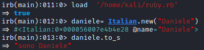

Methods overriding
To override a method, simply define it in the subclass. Ruby will do
the rest.
example:Below we have:
◇ class named
Person (defined without < ) extends the Object method “to_s”
◇ Italian Subclass of Person that override
to_s of the class Person
class Person
attr :name
def initialize(name)
@name = name
end
def to_s
"I'm #{@name}."
end
end
class Italian < Person
def to_s
"sono #{@name}"
end
end
